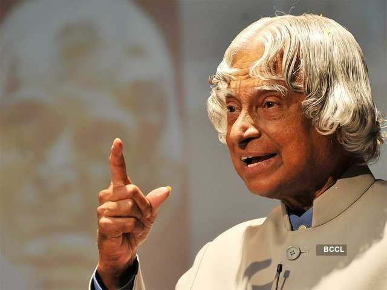

A.P.J. Abdul Kalam, in full Avul Pakir Jainulabdeen Abdul Kalam, (born October 15, 1931, Rameswaram, India—died July 27, 2015, Shillong), Indian scientist and politician who played a leading role in the development of India’s missile and nuclear weapons programs. He was president of India from 2002 to 2007.
A. P. J. Abdul Kalam
Avul Pakir Jainulabdeen Abdul Kalam

Biography
A.P.J. Abdul Kalam served as president of the Republic of India from 2002 to 2007. As president, Kalam promoted the advancement of the national nuclear weapons program. Kalam also devised a 20-year action plan to achieve economic growth through technological development in India.
From 1992 to 1997 Kalam was scientific adviser to the defense minister, and he later served as principal scientific adviser (1999–2001) to the government with the rank of cabinet minister
His prominent role in the country’s 1998 nuclear weapons tests solidified India as a nuclear power and established Kalam as a national hero, although the tests caused great concern in the international community.
In 1998 Kalam put forward a countrywide plan called Technology Vision 2020, which he described as a road map for transforming India from a less-developed to a developed society in 20 years.
The plan called for, among other measures, increasing agricultural productivity, emphasizing technology as a vehicle for economic growth, and widening access to health care and education.
On July 27, 2015, he collapsed while delivering a lecture at the Indian Institute of Management Shillong and was pronounced dead from cardiac arrest soon afterward.
"You have to dream before your dreams can come true."
Learn more about A. P. J. Abdul KalamGallery
Dr APJ Abdul Kalam's House
APJ Abdul Kalam laid to rest in Tamil Nadu hometown, India
Success Story of India's greatest scientist-Dr APJ Abdul Kalam